- 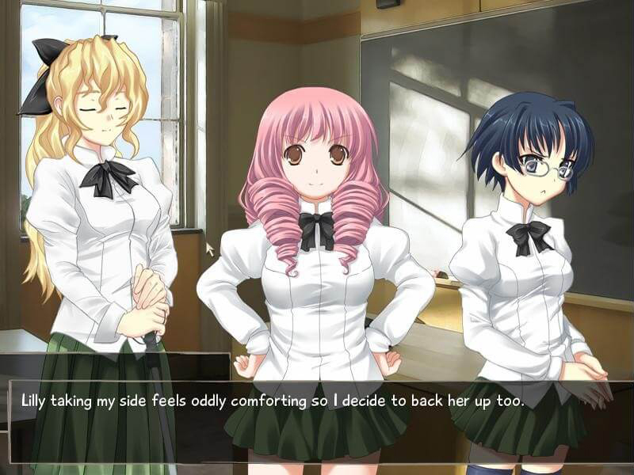
- 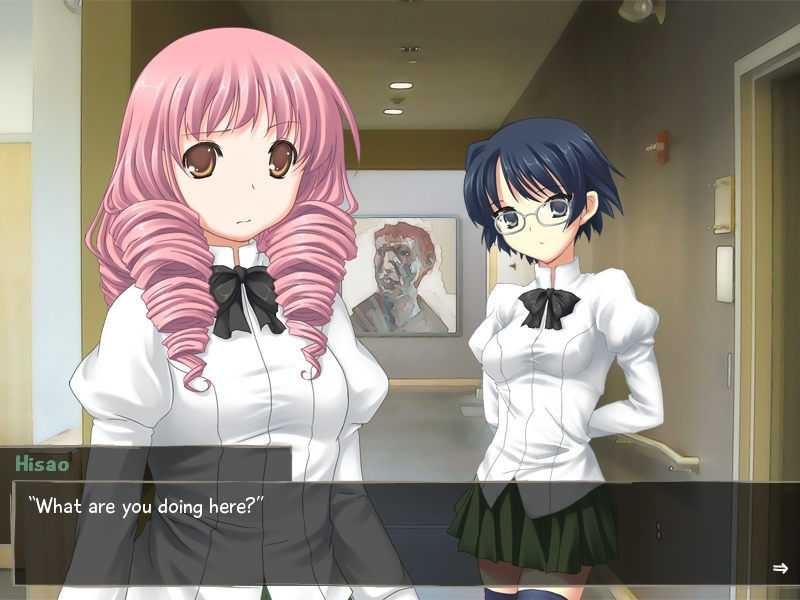
- 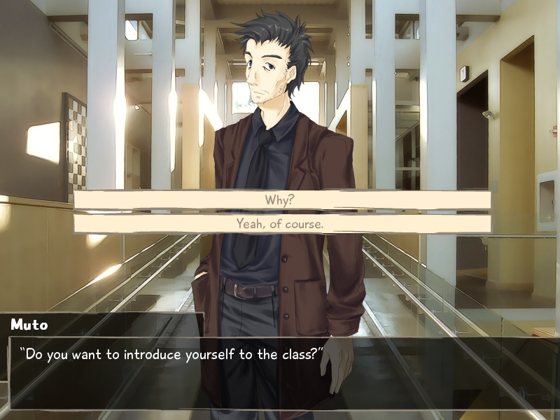
- 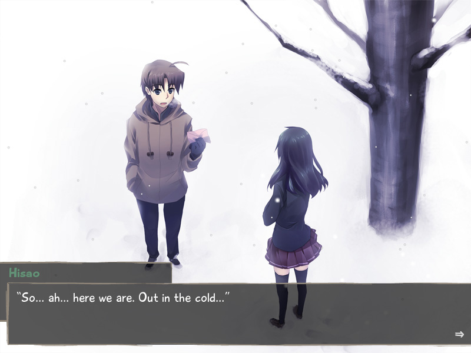
- 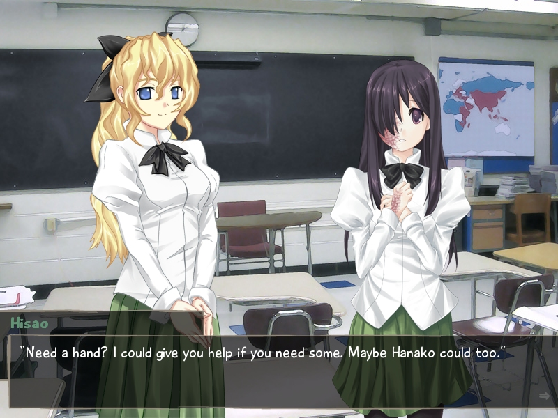
- 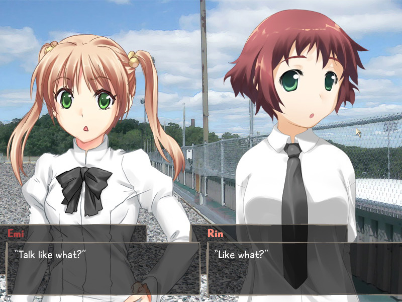
- 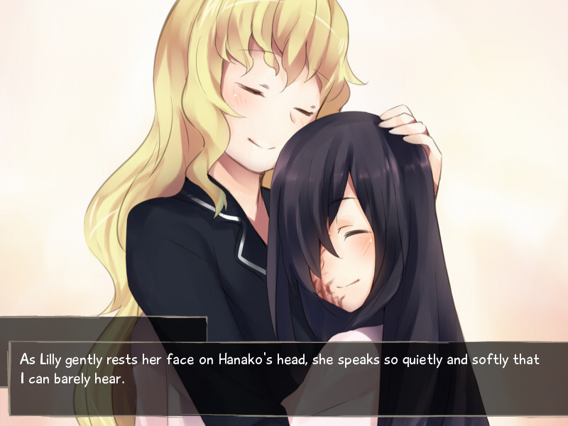
- 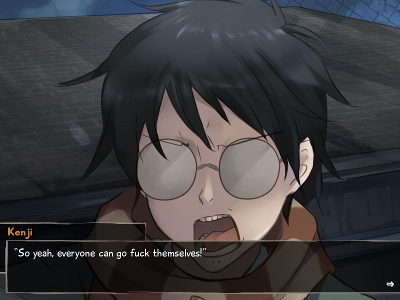
- 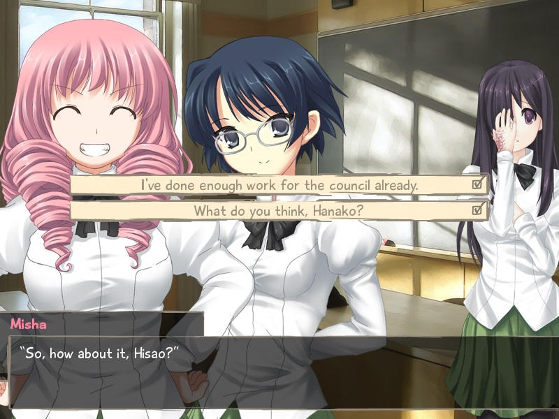
- 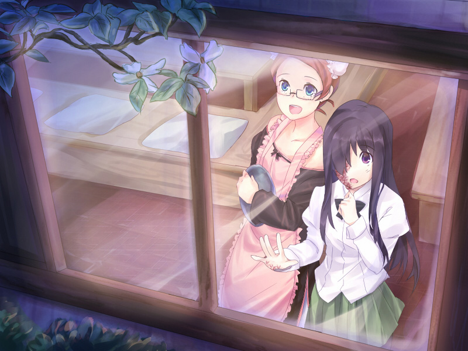
- 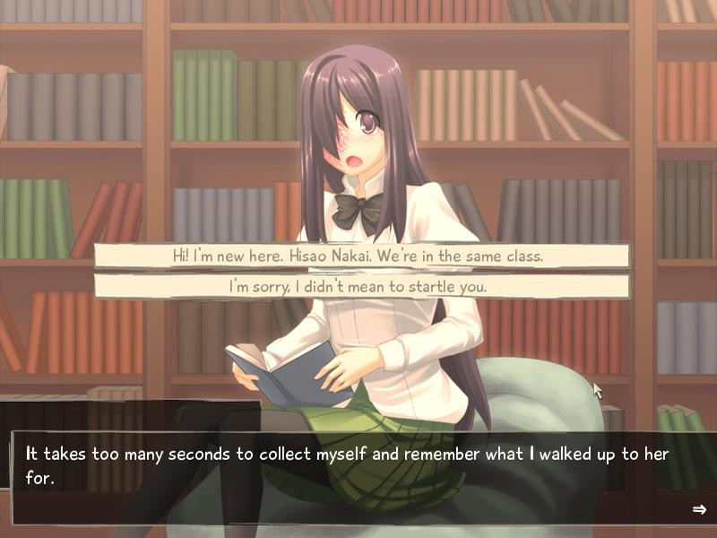
- 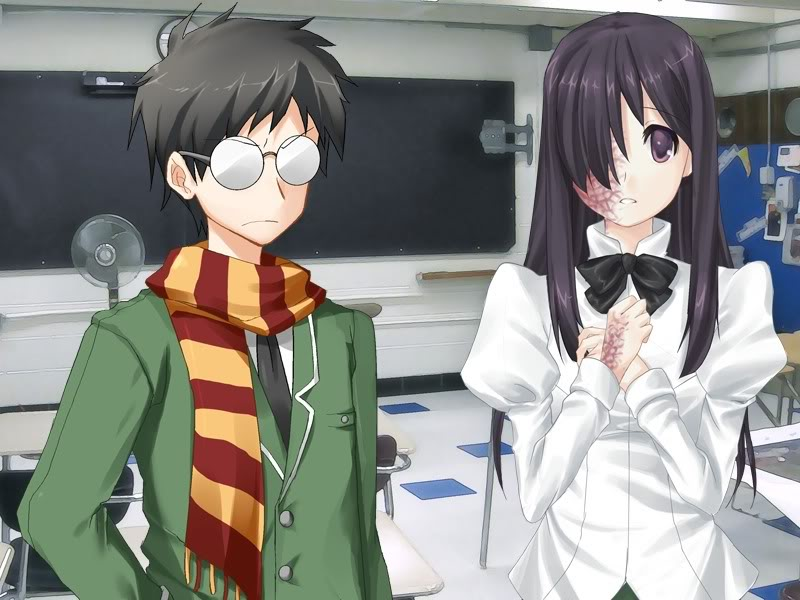
- 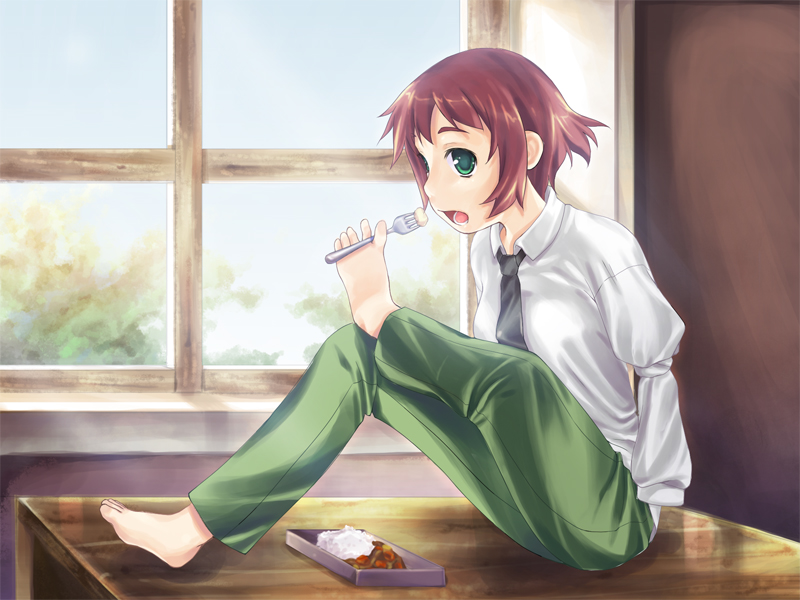
Katawa Shoujo
Katawa Shoujo is a bishoujo-style visual novel set in the fictional Yamaku High School for disabled children, located somewhere in modern Japan.
Hisao Nakai, a normal boy living a normal life, has his life turned upside down when a congenital heart defect forces him to move to a new school after a long hospitalization.
Despite his difficulties, Hisao is able to find friends—and perhaps love, if he plays his cards right.
There are five main paths corresponding to the 5 main female characters, each path following the storyline pertaining to that character.
Release Date:
January 4, 2012
Developer:
Publisher:
Genres:
Romance, Slice of Life
Regions Available:
Novel Length:
Medium (10 - 30 hours)
Reviews
"This is honestly one of the best games I've played in the past few months, reviving my interest in visual novels all over again in the hopes that I can find something this quality story-wise."
lpjazzman220 - 9.5/10
"The writing isn't lyrical, but it's warm and honest enough to be carried by the character art, photographed settings, and music that surround it."
The A.V. Gamer - 7.5/10
"The dialogue is real and emotional, the soundtrack has been carefully allocated to the dialogue and characters, the characters have layers of personality, and overall presentation is solid."
MarioSuperstar - 9/10
About This Novel
Nakai Hisao is a normal high school student, currently in his final year of high school.
One day Hisao receives a letter from parties unknown in his locker and waits at the written place for the sender.
The person who wrote the letter turns out to be his crush; while speaking to her, he suddenly collapses.
He awakes in a hospital bed, and is told by the doctors that the reason he collapsed is due to arrhythmia, a rare heart condition that causes his heartbeat to sometimes become irregular.
Due to this, his parents have enrolled him in Yamaku, a school for disabled students of all kinds.
The story is told through the perspective of the main character, using a first person narrative.
The game uses a traditional text and sprite-based visual novel model with an ADV text box.
Katawa Shoujo contains adult material, and was created using the Ren'Py scripting system.
It is the product of an international team of amateur developers, and is available free of charge under the Creative Commons BY-NC-ND License.
Technical Details
Platforms:
Windows, Mac, Linux, Android
Resolution:
4:3
English:
Fully Translated
Animated Scenes:
Partial
Voiced:
No